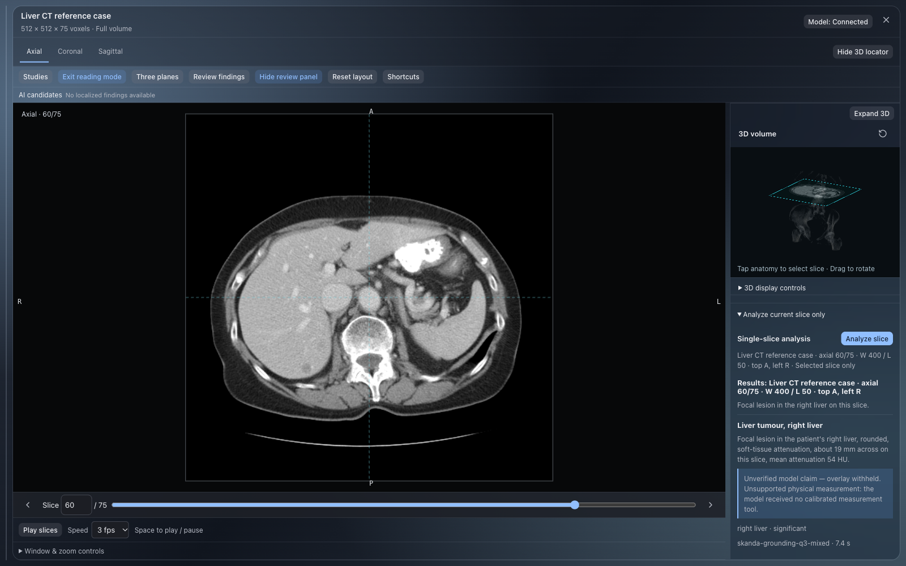

Focal lesion in the right liver on this slice.
Actual app screenshot and output

Single-slice analysis
Analyze slice
Liver CT reference case · axial 60/75 · W 400 / L 50 · top A, left R · Selected slice only
Results: Liver CT reference case · axial 60/75 · W 400 / L 50 · top A, left R
Focal lesion in the right liver on this slice.
Liver tumour, right liver
Focal lesion in the patient's right liver, rounded, soft-tissue attenuation, about 19 mm across on this slice, mean attenuation 54 HU.
Unverified model claim — overlay withheld. Unsupported physical measurement: the model received no calibrated measurement tool.
right liver · significant
skanda-grounding-q3-mixed · 7.4 s
{"modality":"CT","bodyPart":"abdomen, liver","view":"axial","imageQuality":"Adequate contrast resolution for focal lesion detection in relevant tissues.","findings":[{"title":"Liver tumour, right liver","description":"Focal lesion in the patient's right liver, rounded, soft-tissue attenuation, about 19 mm across on this slice, mean attenuation 54 HU.","severity":"significant","confidence":0.8,"location":"right liver","category":"liver","box_2d":[350,418,417,469]}],"pertinentNegatives":[],"impression":"Focal lesion in the right liver on this slice.","recommendations":["Assess for lesion continuity across adjacent slices."],"differential":[]}
```json
{"modality":"CT","bodyPart":"abdomen, liver","view":"axial","imageQuality":"Adequate contrast resolution for focal lesion detection in relevant tissues.","findings":[{"title":"Liver tumour, right liver","description":"Focal lesion in the patient's right liver, rounded, soft-tissue attenuation, about 19 mm across on this slice, mean attenuation 54 HU.","severity":"significant","confidence":0.8,"location":"right liver","category":"liver","box_2d":[350,418,417,469]}],"pertinentNegatives":[],"impression":"Focal lesion in the right liver on this slice.","recommendations":["Assess for lesion continuity across adjacent slices."],"differential":[]}
```